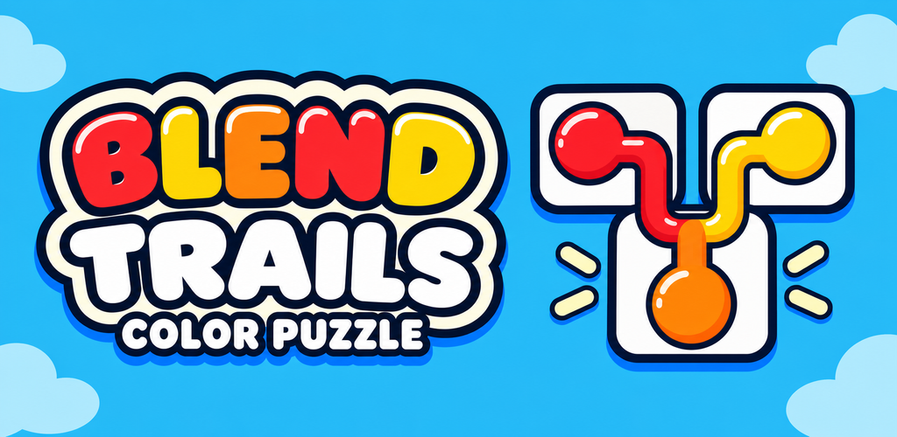
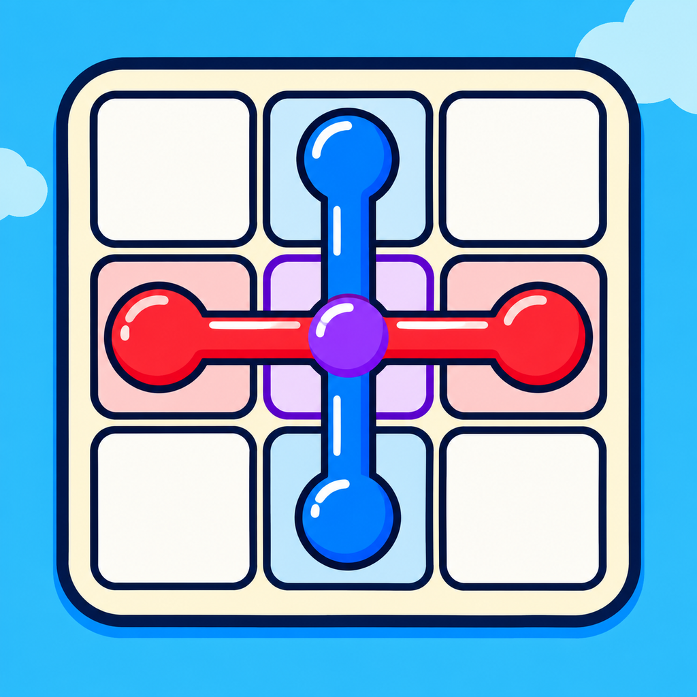
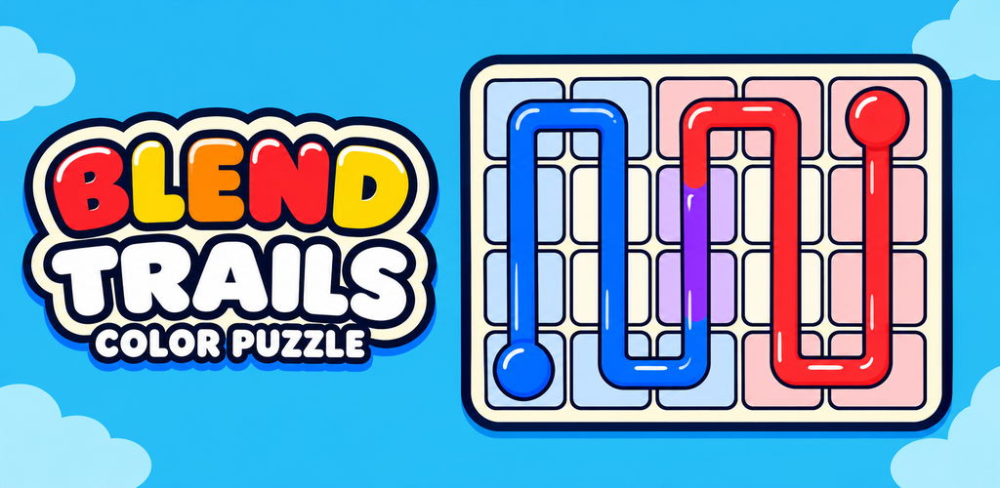
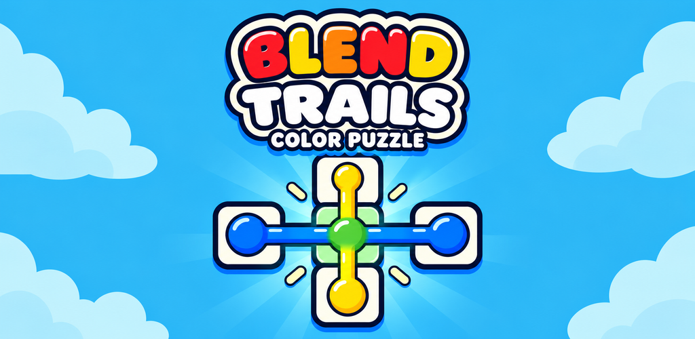

BLEND TRAILS: COLOR PUZZLE / STORE CREATIVE / 2026.10.25
アイコン & フィーチャーグラフィック 3案
現在のToon Boldデザイン・2色の経路と混色をもとに制作。画像をクリックすると原寸で開きます。
アイコン：1024×1024 PNG・各1,000,000バイト以下 ／ フィーチャー：1024×500・透過なしPNG


Sunshine Mix
タイトルと揃える混色シンボル


48 / 64 / 96px


赤＋黄→オレンジ。タイトルと共通のモチーフで、ブランドの覚えやすさを重視。推奨案。
Puzzle Cross
盤面で遊び方を伝える



48 / 64 / 96px


赤＋青→紫。アイコンは盤面の一部を簡略化、横長画像はStage3の5列×4行の経路を表現。
Fresh Trails
太い経路と鮮やかな混色


48 / 64 / 96px


青＋黄→緑。アイコンでは共有する経路、横長画像では中央ロゴと交差する経路を強調。